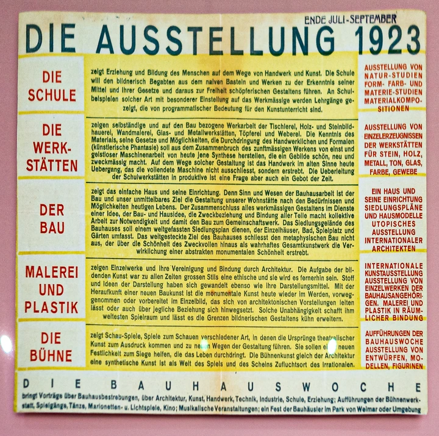

READ SIDE BY SIDE
似ている、の先へ。
二つの作品に同じ問いを投げかけると、それぞれの工夫が見えてきます。気になる問いを一つ選んでみてください。
視線はどこへ進む？
バウハウスの展覧会案内と琳派の屏風を、構図で見比べます。

赤い見出しが、分類ごとの読み始めを揃えます。

折れ曲がる橋が、横に長い画面の中で視線を運びます。
作品の共通点や違いを観察するために組み合わせています。歴史上の交流については、それぞれの記事で出典を確かめられます。
READ SIDE BY SIDE
二つの作品に同じ問いを投げかけると、それぞれの工夫が見えてきます。気になる問いを一つ選んでみてください。
バウハウスの展覧会案内と琳派の屏風を、構図で見比べます。

赤い見出しが、分類ごとの読み始めを揃えます。
折れ曲がる橋が、横に長い画面の中で視線を運びます。
作品の共通点や違いを観察するために組み合わせています。歴史上の交流については、それぞれの記事で出典を確かめられます。